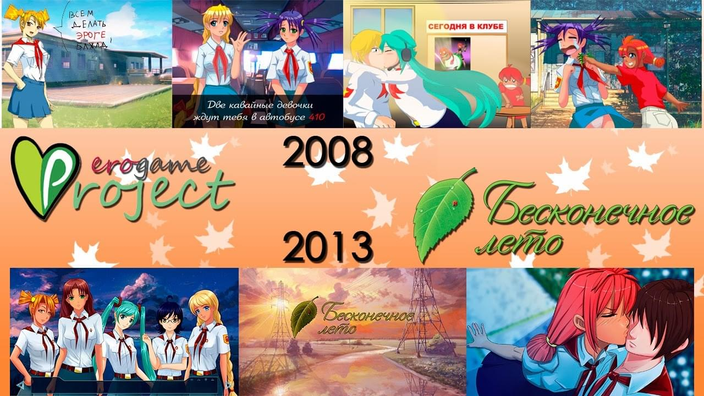
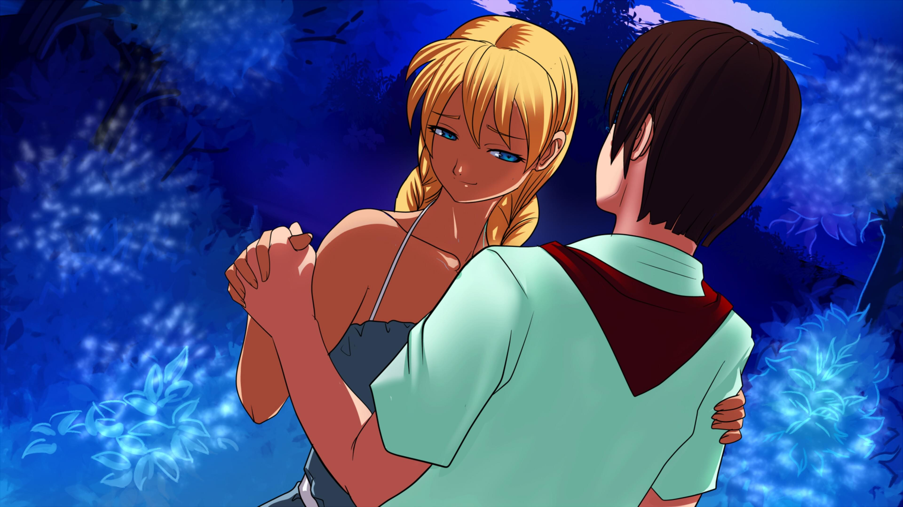
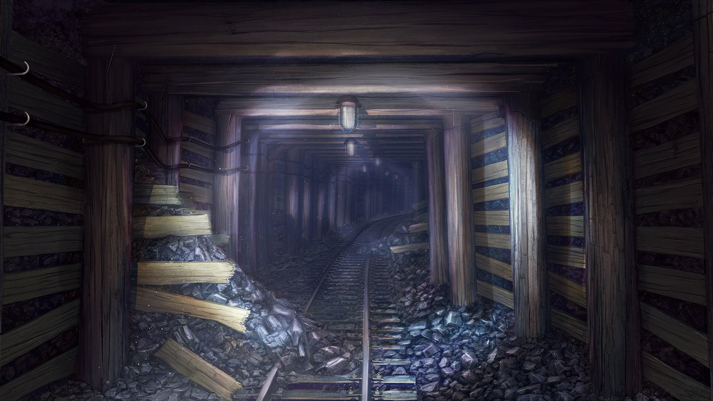
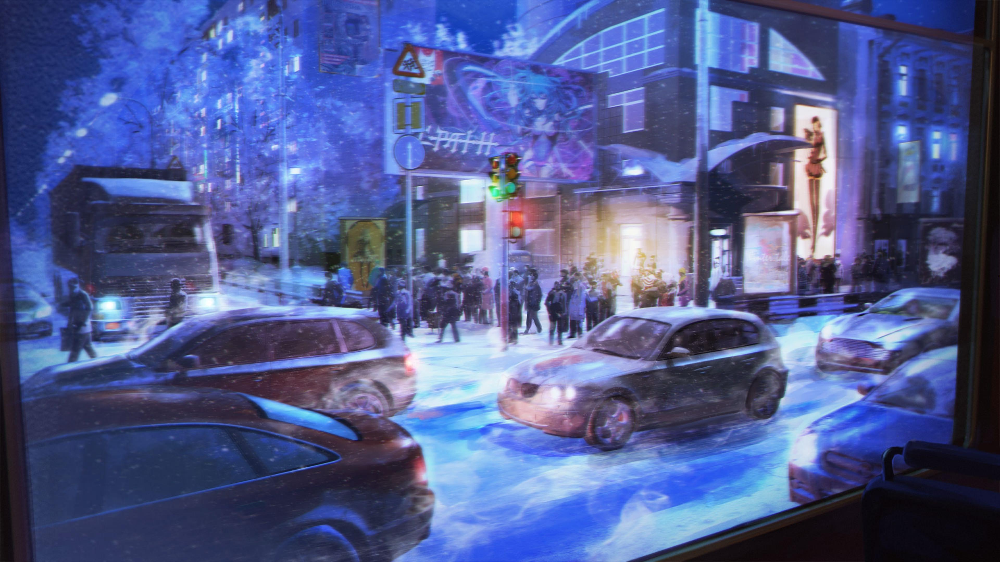
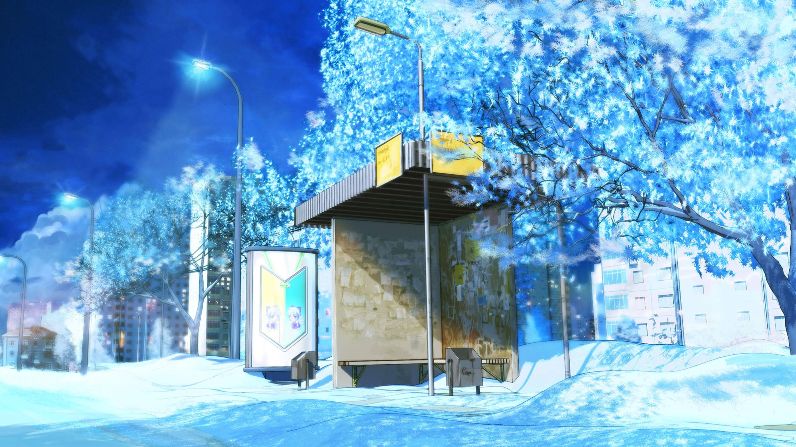
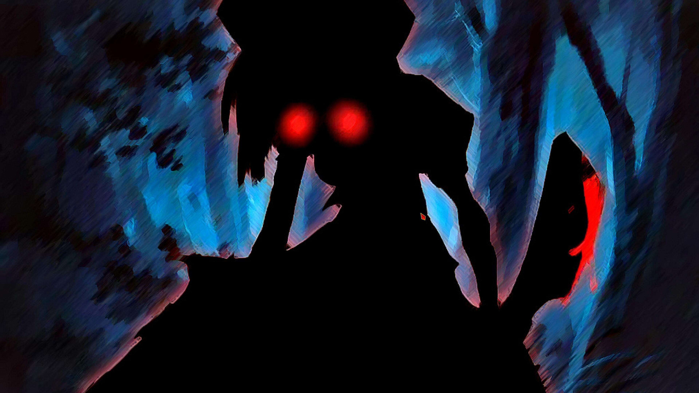
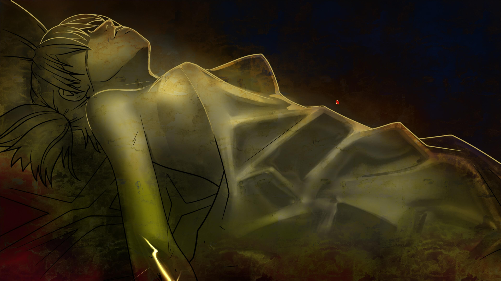
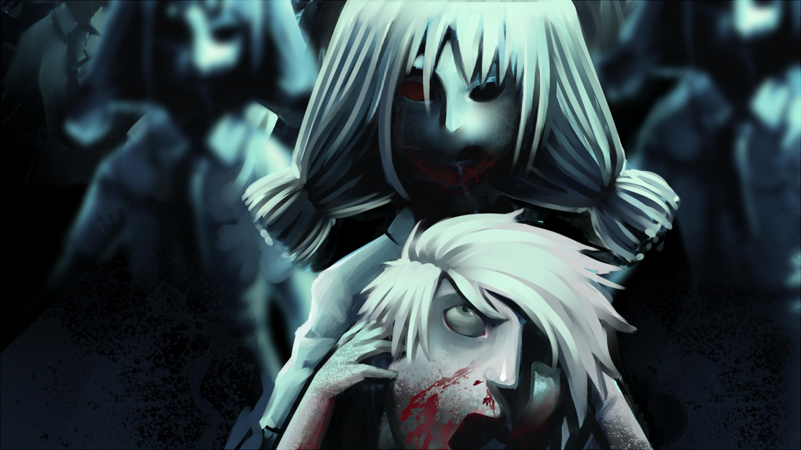
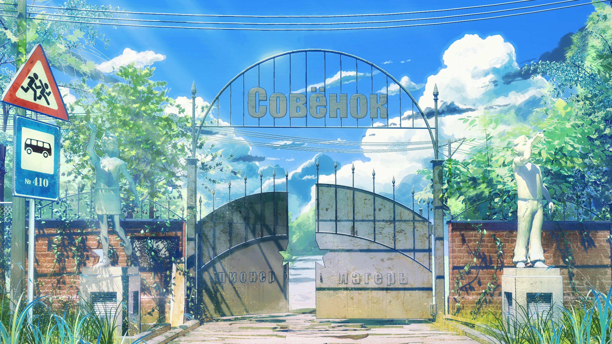

视觉小说推荐：《Бесконечное лето》
首先贴上个人评分：
- 立绘：3/10
- 插画：3/10
- 背景：8/10
- 音乐：9/10
- 剧情：7/10
本作企划始于 2008 年，虽然兜兜转转了五年才艰难地开发完成，但人设如同原定计划那样依然是按照 iichan 的版面拟人化制作的，除了大幅提高了立绘精度使之符合本世代美少女游戏应有的图像素质外，并无太大变动。

不过和制作初期释出的立绘相比，我认为最终版本的立绘过于粗糙（说实话还不如我的水平），五官刻画和上色对二次元萌豚而言非常不友好，并且头发依然是塑料质感……说实话还不如使用初版立绘（至少有《寒蝉鸣泣之时》那味儿）。Pixiv 上的一些欧美画家似乎也常常会画出这种画风的人物，看起来欧美画家普遍对日系风格不大擅长的样子。
本作的插画质量也一言难尽，有些插画还算能看，但有些插画看起来真的就像是学了三年数码绘画的小学生绘制出的残次品（闪瞎狗眼的那种）。因此，虽然本作的完全体是限制级的美少女游戏，我依然推荐您直接游玩 Steam 版的全年龄和谐版。以下是我精挑细选的两张插画，您看看这像话嘛：

可以看出这两张插画的完成度也不算高……但这真的已经是游戏中质量最好的两张了。由于 R18 的插画质量更加糟糕，并且我对不河蟹物的兴趣也不大，这里就不贴补丁插画了。感兴趣的读者可以自行搜索查看。
嘛，看到这里，您可能已经产生了「这个毛子制作的粪游有什么推荐的必要吗？」这种失礼的想法。但不得不说，尽管立绘和插画非常劝退，但加上高质量的背景、音乐和剧情后，本作确实可以称得上是免费视觉小说中的精品！
首先，我们来看看本作的背景图片，说实话比我玩过的很多价格高昂的日本 Galgame 背景还要精致：



恐怖如斯！读者可以再找几部免费视觉小说来进行对比，仅就背景来说绝对无出其右。希望有朝一日绝大部分的国产视觉小说也能达到如此品质，不再做空有情怀但是各项指标都不及格的垃圾出来。
读者：诶，等等，我好像在最后一张背景图里看到了什么不世出的天才？！！！
是的，你没有幻视，广告板上的确印着整个二次元最聪明的数学家！这个游戏中有许多萌豚熟悉的彩蛋，除了⑨，甚至还有龙宫礼奈小姐（不），最重要的是你还可以攻略初音ミク様（仮）！作为一款免费游戏，还要什么自行车？

读者：诶，那这个游戏究竟讲了一个什么故事啊？难道是毛二用爱发电粗制滥造了一个二次元大杂烩吗？
断乎不是！
本作实际上有着完整的背景设定和故事流程，上述内容真的只是彩蛋而已（初音未来也不是真的）。为了不剧透，下面给出流水账一般的剧情简介：
男主所处的时代本来与你我相同，也许生活状态也一样（NEETNEETNEE～），但某天晚上赶公交前往同学聚会的时候突然失去意识，醒来发现自己穿越到了一个处处充满着苏联气息但却各种违和的上世纪的夏令营中。之后的七天中便是在夏令营中和各式各样的美少女培养感情的王道展开！尽管有时你需要躲避僵尸，有时你所有人围殴，有时你会被自己偷袭致死，有时候你会和女主们融为一体，但最终你可以抵达夏令营全制霸的后宫结局。


……是不是有些不明所以？这也是没办法事情，为了不剧透很多东西没法展开讲嘛。总而言之本作的剧情处处充满伏笔和神转折，作为一款视觉「小说」而言绝对是一个款合格的产品，相信我，您游玩后一定不会后悔在夏令营度过的时间的。
唔，立绘、插画、背景、剧情都说过了，接下来评价一下本作的音乐吧！事实上，如果单纯把 BGM 提取出来当作作业循环曲来听的话，本作的音乐质量其实算不上优秀，但是放在游戏里和剧情及插画搭配食用真的别有一番风味！可以说是近几年我听过的和剧情最搭的曲子们了。
说再多不如亲身体验，这里强烈推荐您试听一下「Forest Maiden」这首曲子，想象一下平日里德智体美劳全面发展的金发美少女偷偷在森林中翩翩起舞的情景。如果戳到了您的点，请务必下载游戏攻略斯拉维娅吧！

第一次写游戏推荐，由于时间有限也没有列一个大纲，希望这篇随心所欲狗屁不通的安利文能让您决定前往小猫头夏令营和各式各样的苏维埃萌妹度过一个快乐的夜晚～
本博客所有文章除特别声明外，均采用 CC BY-SA 4.0 协议 ，转载请注明出处！